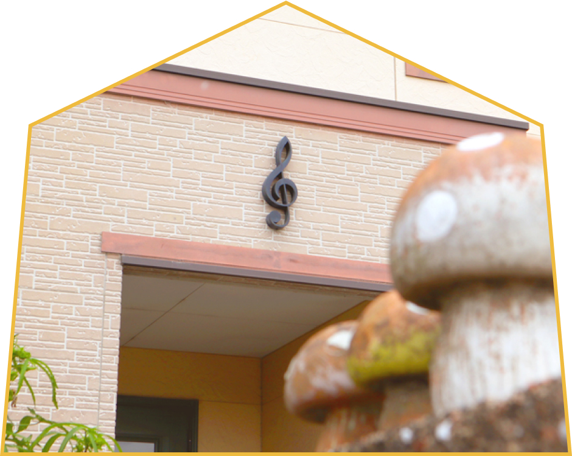

谷川ピアノ
教室

音楽のまほうで笑顔咲く
町の小さなピアノ教室
ピアノに触れる機会は、意外と人生のいろいろな時期で訪れるもの。そんなときにそっと寄り添い、奏でる楽しさを味わう道行をサポートできる教室でありたいと思っています。
谷川ピアノ教室では、生徒さんの「好き」を大切にし、音楽を楽しめるよう工夫した個人レッスンを行っています。
ピアノを始める時期や動機は人それぞれでも、どんなときも楽しく笑顔になれるちからがあるのが音楽です。年齢や性別を問わず幅広く生徒を受け付け中です。
三滝にある町のちいさなピアノ教室。笑顔あふれる教室です。

大切にしている３つの事
一人一人を大切に
きめ細やかな
音楽が大好きに
一人ひとりの生徒さんのペースを大切にし、スキルや希望に合ったきめ細やかなレッスンをしています。
より音楽を「好き」になってもらえるレッスンを進めています。